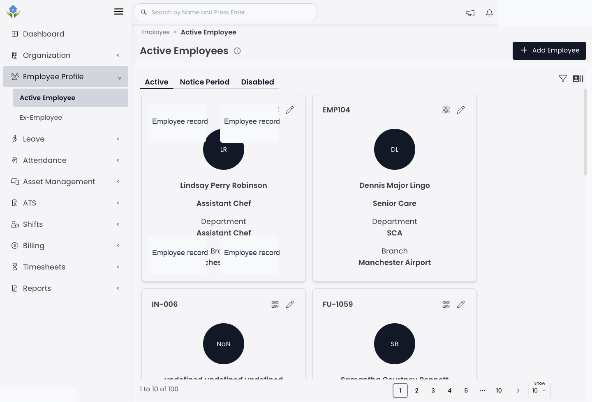
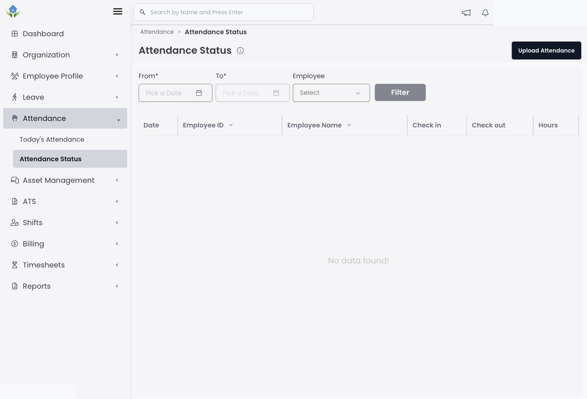
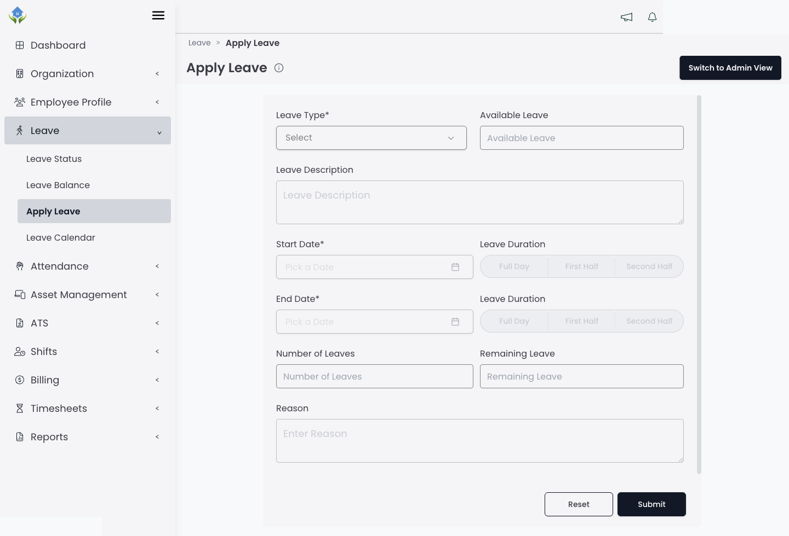
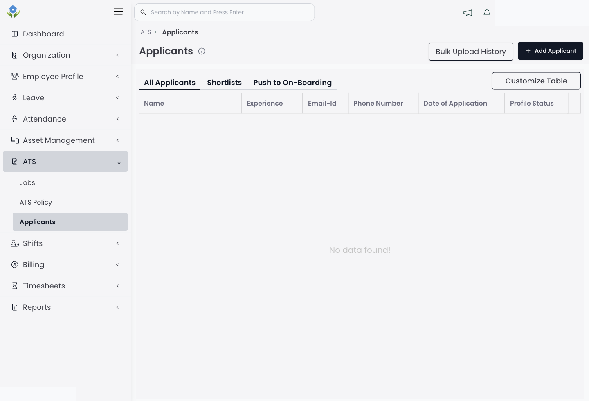
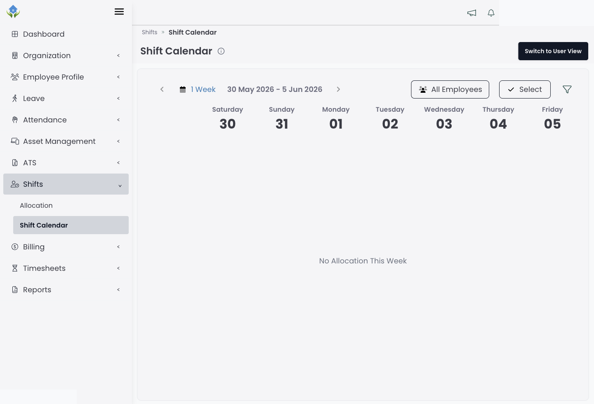
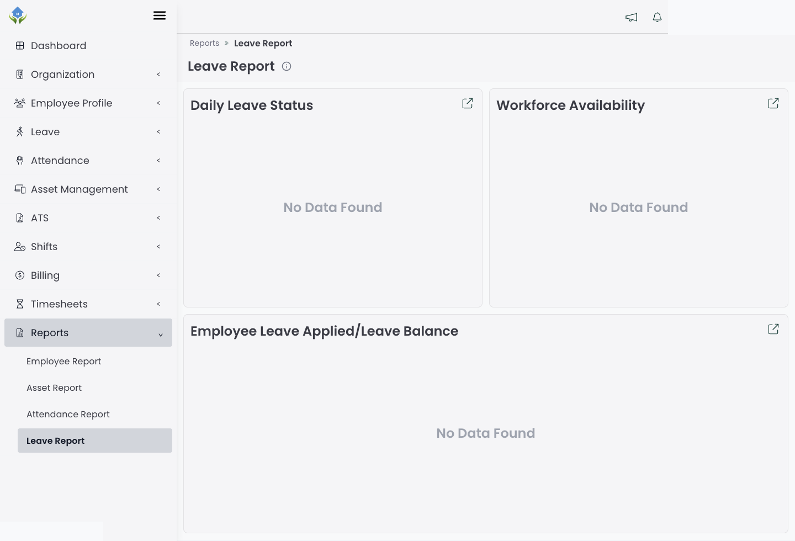

Staafin brings employee records, leave, attendance, shifts, timesheets, assets and reporting into a connected HRMS for UK teams.
Keep employee details, documents and organisation structure in one controlled place, so managers are not relying on scattered files.

Real product-style view showing employee directory and profile records.
See attendance activity clearly and help managers spot missing records, late entries and approval work before it becomes payroll noise.

Attendance workflows help teams review activity and exceptions in context.
Manage leave requests, availability and balances in one place, with a clearer view of coverage across the team.

Leave views support quick availability checks and balance reviews.
Track allocated assets, returns and ownership history so equipment does not disappear into spreadsheets or messages.

Dashboard and operational modules give managers a cleaner daily view.
Manage applicants and hiring stages without losing candidate information across inboxes and manual trackers.

Applicant tracking views keep hiring stages and candidate records structured.
Plan shifts, reduce allocation conflicts and connect attendance activity with timesheet records.

Shift calendar views help operational managers understand coverage and changes.
Use workforce reports to understand employee records, leave, attendance and asset activity without rebuilding spreadsheets each week.

Reporting views turn daily workforce records into management visibility.
Book a guided walkthrough and review the workflows that matter most to your team.
Book a demo